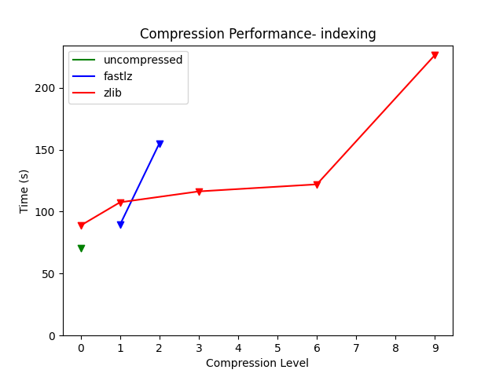
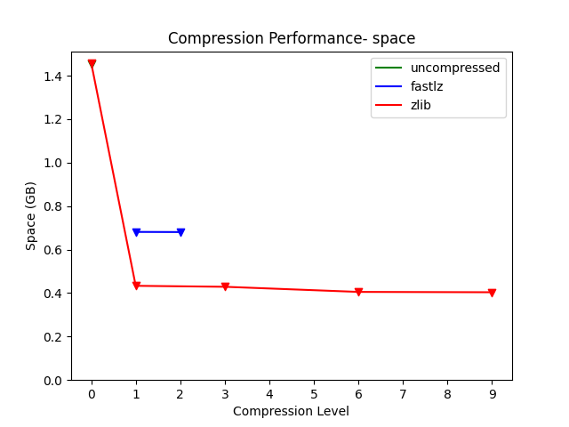
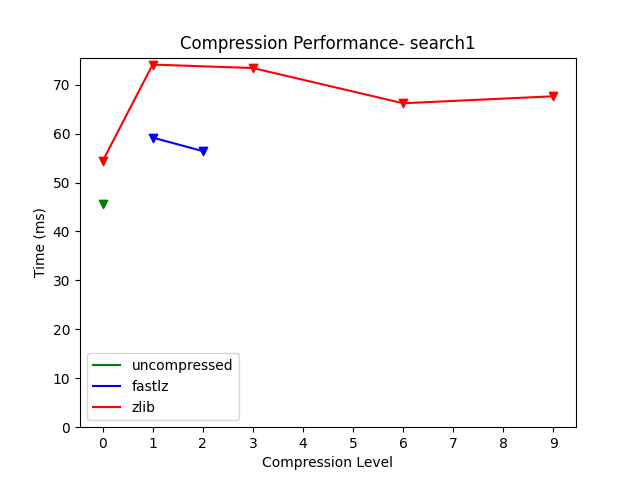
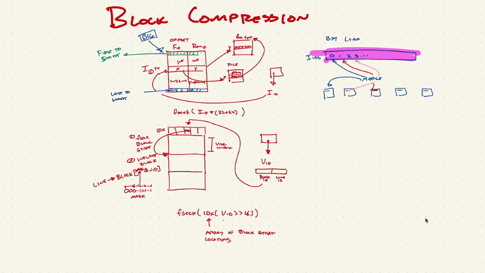

The large genomic data sets used by GIGGLE occupy a large amount of disk space. Could we use compression algorithms to reduce disk space utilization without significantly affecting the runtime?
We used the most common library for data compression in C- zlib. We created a wrapper/interface around the zlib functions for improved usability. We applied compression to the data stored in the data file. In addition to the existing data, we stored the uncompressed sizes in the index file. We added a file header/marker for both index and data files. The file header includes information about the compression method, compression level, and an extra flag reserved for future use. Files without headers from previous versions are assumed to be uncompressed and are read accordingly, thus enabling backward compatibility. We used function pointers to dynamically set the compress/uncompress functions, depending on the compression method mentioned in the file header.
| type | time | user | system |
|---|---|---|---|
| uncompressed | 70.49318158458 | 64.95069978 | 5.52916806 |
| fastlz1 | 89.33131506806 | 82.75897032 | 6.56374108 |
| fastlz2 | 155.0417450156 | 128.78304566 | 20.595867 |
| zlib0 | 88.7408512163 | 78.20686414 | 10.524262 |
| zlib1 | 107.49964638396 | 99.16664924 | 8.3172525 |
| zlib3 | 116.30003864952 | 106.35132674 | 8.88081164 |
| zlib6 | 122.00174653288 | 114.55789172 | 7.40855448 |
| zlib9 | 226.4432716358 | 214.986536 | 11.37603618 |

| type | space |
|---|---|
| uncompressed | 1.452596008 |
| fastlz1 | 0.681222584 |
| fastlz2 | 0.68060137 |
| zlib0 | 1.459414745 |
| zlib1 | 0.433347471 |
| zlib3 | 0.428881416 |
| zlib6 | 0.405332483 |
| zlib9 | 0.40376754 |

| command | mean | stddev | median | user | system | min | max |
|---|---|---|---|---|---|---|---|
| uncompressed | 45.5873693 | 3.959420647 | 44.7290814 | 31.80930286 | 13.75768714 | 40.9441094 | 62.0611574 |
| fastlz1 | 59.18466978 | 5.09236337 | 59.78575998 | 37.83761843 | 21.31594118 | 51.78323798 | 74.08010998 |
| fastlz2 | 56.41575026 | 3.620396294 | 55.79629656 | 37.70584 | 18.697718 | 52.23282456 | 77.13510456 |
| zlib0 | 54.34283227 | 3.636371739 | 53.8785227 | 37.09720143 | 17.08244929 | 49.7197372 | 68.0634982 |
| zlib1 | 74.10076984 | 6.043988274 | 71.65701646 | 55.84351846 | 18.24804923 | 67.48732846 | 92.28525846 |
| zlib3 | 73.39287504 | 4.622238952 | 72.43769124 | 53.72295818 | 19.64546818 | 66.57508224 | 83.36368524 |
| zlib6 | 66.19744482 | 2.242995965 | 65.84001782 | 49.64041217 | 16.5452913 | 63.34766232 | 74.41526232 |
| zlib9 | 67.62356376 | 1.623330847 | 67.41949892 | 52.68799767 | 14.9192093 | 65.11356992 | 71.14124392 |

| command | mean | stddev | median | user | system | min | max |
|---|---|---|---|---|---|---|---|
| uncompressed | 9.189936953 | 0.5627173893 | 9.0503129 | 4.956227092 | 4.23508539 | 8.2692079 | 10.6013019 |
| fastlz1 | 12.98639579 | 1.471285836 | 12.47858378 | 4.174342933 | 8.823754489 | 11.38921178 | 19.59861078 |
| fastlz2 | 12.19613769 | 0.5875847746 | 12.03119652 | 3.905453208 | 8.274995 | 11.21100202 | 13.77797102 |
| zlib0 | 11.95358581 | 0.7256513148 | 11.8664233 | 4.200792825 | 7.762784753 | 10.7087693 | 14.7913433 |
| zlib1 | 12.96278894 | 0.9137541321 | 12.78595442 | 5.075546634 | 7.891110634 | 11.84051342 | 17.86654842 |
| zlib3 | 12.6532173 | 0.64123711 | 12.4734273 | 5.266293897 | 7.37788507 | 11.6403703 | 15.2530783 |
| zlib6 | 12.20321933 | 0.5730424908 | 12.02490832 | 5.261854609 | 6.953686435 | 11.33335482 | 14.26628082 |
| zlib9 | 12.62452388 | 0.5751466442 | 12.48667264 | 5.127496946 | 7.492615961 | 11.60951164 | 14.42773764 |
Note: The time duration values are approximate as they are affected by other applications running in the background.
The disk space usage was reduced by 70-72%, but the time taken for the search queries increased by 25-50%. We can conclude that fastlz2 is the best candidate. Compared to the uncompressed version, it reduced the space by around 53%, increased the search times by only 24% and 33% respectively. The indexing time was roughly 2.2 times, which is fine for a one-time task.
roadmap_sort.tar.gz file using wget https://s3.amazonaws.com/layerlab/giggle/roadmap/roadmap_sort.tar.gzdisk_store.c file in the GIGGLE repo,
compression_method (accepted values- 'z' for zlib or 'f' for fastlz)compression_level (accepted values- 0 to 9 for zlib and 1 or 2 for fastlz)giggle binary using the make command in the repository. Make sure the variable $GIGGLE_ROOT is set.compression_method and compression_level. For example, here the name is zlib3 for using zlib with level 3. Replace it with other values.
hyperfine '$GIGGLE_ROOT/bin/giggle index -s -f -i "roadmap_sort/*gz" -o zlib3' --export-csv roadmap_sort_comparisons/index/zlib3.csv -M 1ls -l zlib3/cache* | awk '{s+=$5;}END{print "zlib3,"s;}' >> roadmap_sort_comparisons/space.csvhyperfine -w 3 '$GIGGLE_ROOT/bin/giggle search -i zlib3 -q GSM1218850_MB135DMMD.peak.q100.bed.gz' --export-csv roadmap_sort_comparisons/search1/zlib3.csvhyperfine -w 3 '$GIGGLE_ROOT/bin/giggle search -i zlib3 -r 1:1-1000000' --export-csv roadmap_sort_comparisons/search2/zlib3.csvroadmap_sort_comparisons directory.After compressing the files for leaves, currently, the file that takes up the most space is the offset index file- offset_index.dat. It stores a list of a pair of integers x and y where x is the file ID and y is the line ID in that file. We need the ability to read a particular position in the compressed file. After exploring various ways to implement compression, we concluded that we should implement block impression.
offset_index.dat filenum- the number of file_id_offset_pairs stored in the filewidth- the width of each file_id_offset_pair, currently 96 bits (12B)
file_id_offset_pair stores the two integers mentioned above
file_id (x)offset (y)file_id_offset_pairsIn the following diagram, Ryan has explained well how block compression could be implemented for offset_index.dat.

Block Compression- Ryan Layer
I_10- which is the offset_id in the offset_index.dat file. Instead of storing I_10, we will store two values- the compressed block offset ID and the line offset ID within that block.I_10/offset_id, we will seek compressed file to the compressed block offset ID. We will uncompress the whole block and then seek to the line offset ID.offset_index_compressed.dat filenum- the number of file_id_offset_pairs stored in the filewidth- the width of each file_id_offset_pair, currently 96 bits (12B)block_size- the size of each uncompressed block- same for all blockscompressed_offsets- the offset of each compressed blockcompressed_data- the actual compressed blocksWe will create a standalone program called block_compression.c with the following functionality-
offset_index.dat to offset_index_compressed.datoffset_index_compressed.dat to offset_index.datoffset_id from offset_index.datoffset_id from offset_index_compressed.datWe need to write unit tests to make sure the output from 3 and 4 are the same.
mmap usageoffset_data_append_data function pointer usage instead of fwriteOFFSET_INDEX_DATA macro definition